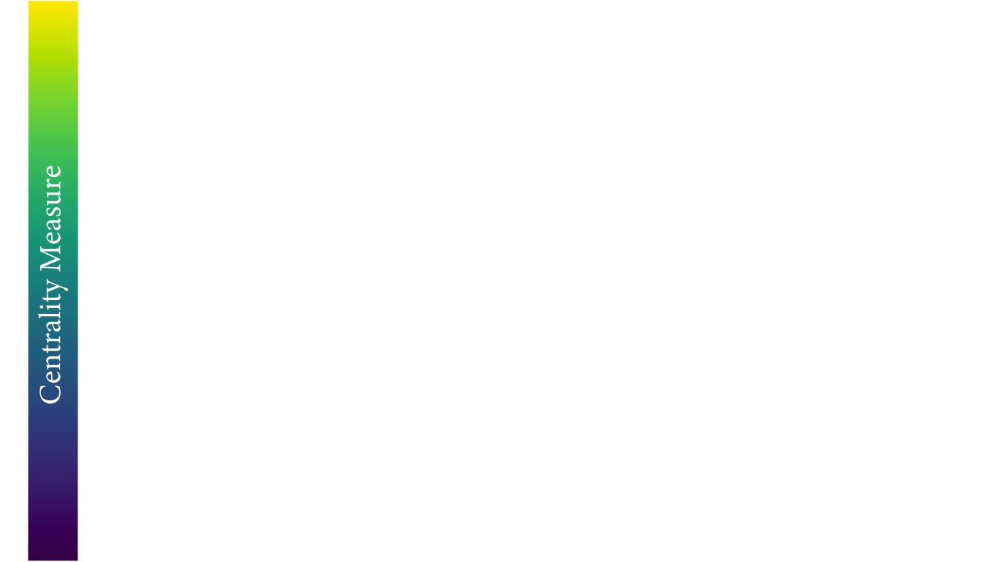

Measuring Centrality in Social Networks: Comparison through Visualization
PPHA 30560: Data Visualization
Jacob Jameson
"There is certainly no unanimity on exactly what centrality is or
on its conceptual foundations, and there is little agreement on the
proper procedure for its measurement."
- Linton Freeman (1977)
Social network analysis can be used to measure the importance of a
person as a function of the social structure of a community or organization.
In social networks, centrality measures this kind of structural importance of the
node of a person. This project uses data visualization as a tool to explain how different
measures of centrality may be used to analyze different questions in network analysis.
In this project we will explore the following centrality measures:
Degree Centrality
Eigenvector Centrality
Katz Centrality
PageRank
HITS Hubs and Authorities
Closeness Centrality
Betweenness Centrality
For these examples we will look at centrality for both directed and undirected graphs.
The main difference between directed and undirected graph being that a directed graph
contains an ordered pair of vertices whereas an undirected graph contains an unordered pair of vertices.
An example of a directed graph would be one in which people nominate their top 5 friends.
In this graph, nodes (people) would connect to others nodes through directed edges (nominations). It is
possible for Jacob to nominate Kashif without Kashif nominating him back. You can imagine why centrality
in a friendship network might take into account the direction of these nominations. If I list 100
people as my friends and none of them list me back, do we think I am a popular person?
An undirected graph is one in which connectedness of two nodes does not have a direction
associated with it. This network may be one used in contagious diseases modeling, where centrality may be defined
as the number of nodes that interact with another node and the direction is irrelevant.

Degree Centrality
Degree of a node is basically number of edges that it has. The basic intuition is that,
nodes with more connections are more influential and important in a network. In other words,
the person with higher friend count in a social network, the more cited paper (in-degree) in a
scientific citation network is the one that is more central according to this metric.
For directed graphs, in-degree, number of incoming points, is considered as importance factor for nodes.
Eigenvector Centrality
Eigenvector centrality is a basic extension of degree centrality, which defines
centrality of a node as proportional to its neighbors’ importance. When we sum up
all connections of a node, not all neighbors are equally important. Let’s consider
two nodes in a friend network with same degree, the one who is connected to more central
nodes should be more central.
First, we define an initial guess for the centrality of nodes in a graph as
\(x_i=1\). Now we are going to iterate for the new centrality value \(x_i'\) for node i as following:
$$x_i' = \sum_{j} A_{ij}x_j$$
Here \(A_{ij}\) is an element of the adjacency matrix, where it gives 1 or 0 for whether an
edge exists between nodes \(i\) and \(j\). it can also be written in matrix notation as \(\mathbf{x'} = \mathbf{Ax}\).
We iterate over t steps to find the vector \(\mathbf{x}(t)\) as:
$$\mathbf{x}(t) = \mathbf{A^t x}(0)$$
The drawing also shows, the nodes which have the same number of connections are not necessarily in
the same heat map color. The one that is connected to more central nodes are more hot in this visualization.
However, as we can see from the definition, it is a problematic measure for directed graphs.
Let’s say that a new research paper is published and it references a handful of existing papers.
It would not contribute to any of those referenced papers in this citation network because it is not
cited by any other papers and has zero eigenvector centrality. In other words, eigenvector centrality
would not take zero in-degree nodes into account in directed graphs such as citation networks.
Here the contribution from zero in-degree nodes is zero; consequently, all values are zero
except two nodes which are referencing each other.
Katz Centrality
Katz centrality introduces two positive constants \(\alpha\) and \(\beta\) to tackle the problem of eigenvector
centrality with zero in-degree nodes:
$$x_i = \alpha \sum_{j} A_{ij} x_j + \beta$$,
again \(A_{ij}\) is an element of the adjacency matrix, and it can also be written in matrix notation as
\(\mathbf{x} = \alpha \mathbf{Ax} + \beta \mathbf{1}\). This \(\beta\) constant gives a free centrality
contribution for all nodes even though they don’t get any contribution from other nodes. The existence of a
node alone would provide it some importance. \(\alpha\) constant determines the balances between the contribution
from other nodes and the free constant.
Although this method is introduced as a solution for directed graphs, it can be useful for some applications
of undirected graphs as well.
PageRank
PageRank was introduced by the founders of Google to rank websites in search results.
It can be considered as an extension of Katz centrality. The websites on the web can
be modeled as a directed graph, where hypermedia links between websites determines the
edges. Let’s consider a popular web directory website with high Katz centrality value
which has millions of links to other websites. It would contribute to every single
website significantly, nevertheless not all of them are important. To overcome that
issue, contribution value is divided by out-degree of the node:
where \(\mathbf{D}\) is a diagonal matrix with elements \(D_{ii} = max(k_i^{out}, 1)\).
As the drawing demonstrates, the nodes with fewer out-degree contributes way more to each
node compared the Katz Centrality. Here the node at the top right gets only reference of a
very important node, and it becomes way more important compared to the Katz Centrality; on
the other hand, the node in the center which gets contribution from high out-degree nodes
loses its importance.
HITS Hubs and Authorities
Up until this point, we have discussed the measures that captures high node centrality,
however, there can be nodes in the network which are important for the network, but they
are not central. In particular, let’s consider a survey (review) article in a scientific
citation network. The article itself is not necessarily stating a new discovery and it
is not central; but nevertheless it is a helpful material to acquire knowledge on a
topic because it captures a lot of central research articles. In order to find out such
nodes, HITS algorithm introduces two types of central nodes: Hubs and Authorities.
Authorities are the one that most cited by Hubs and Hubs are the one that citing the most high Authority nodes.
Authority Centrality is defined as the sum of the hub centralities which point to the node \(i\):
$$x_i = \alpha \sum_{j} A_{ij} y_j,$$
where \(\alpha\) is constant. Likewise, Hub Centrality is the sum of the
authorities which are pointed by the node \(i\):
$$y_i = \beta \sum_{j} A_{ji} x_j,$$
with constant \(\beta\). Here notice that the element of the adjacency matrix
are swapped for Hub Centrality because we are concerned with outgoing edges for
hubs. So in matrix notation:
$$\mathbf{x} = \alpha \mathbf{Ay}, \quad$$
$$\mathbf{y} = \beta \mathbf{A^Tx}.$$
As it can be seen from the drawing, HITS Algorithm also tackles the problem with zero
in-degree nodes of Eigenvector Centrality. These zero in-degree nodes become central
hubs and contribute to other nodes. Yet we can still use a free centrality
contribution constant like in Katz Centrality or other variants.
Closeness Centrality
Closeness Centrality is a self-explanatory measure where each node’s
importance is determined by closeness to all other nodes. Let \(d_{ij}\)
be the length of the shortest path between nodes \(i\) and \(j\), the average
distance \(l_i\) is such as:
$$l_i = \frac{1}{n} \sum_{j}d_{ij}$$
Since we are looking for the closer node, the Closeness Centrality \(C_i\)
is inverse proportional to average length \(l_i\), so:
Here we are using an unweighted graph and all edges have weight 1
distance cost for calculating shortest path length \(d_{ij}\). This measure
can be used to determine the central distribution point in a delivery network.
Betweenness Centrality
Betweenness Centrality is another centrality that is based on shortest
path between nodes. It is determined as number of the shortest paths
passing by the given node. For starting node \(s\), destination node
\(t\) and the input node \(i\) that holds \(s \ne t \ne i\), let \(n_{st}^i\) be
1 if node \(i\) lies on the shortest path between \(s\) and \(t\); and \(0\) if not.
So the betweenness centrality is defined as:
$$x_i = \sum_{st} n_{st}^i$$
However, there can be more than one shortest path between \(s\) and \(t\) and
that will count for centrality measure more than once. Thus, we need to
divide the contribution to \(g_{st}\), total number of shortest paths between \(s\) and \(t\).
$$x_i = \sum_{st} \frac{n_{st}^i}{g_{st}}$$
References
Newman, Mark. Networks: An Introduction (pp. 168-234, Chapter 7: Measures and Metrics)., Oxford University Press, 2010.
Aksakalli, Can Güney. Network Centrality Measures., July 17, 2017


 Katz centrality introduces two positive constants \(\alpha\) and \(\beta\) to tackle the problem of eigenvector
centrality with zero in-degree nodes:
Katz centrality introduces two positive constants \(\alpha\) and \(\beta\) to tackle the problem of eigenvector
centrality with zero in-degree nodes:

 PageRank was introduced by the founders of Google to rank websites in search results.
It can be considered as an extension of Katz centrality. The websites on the web can
be modeled as a directed graph, where hypermedia links between websites determines the
edges. Let’s consider a popular web directory website with high Katz centrality value
which has millions of links to other websites. It would contribute to every single
website significantly, nevertheless not all of them are important. To overcome that
issue, contribution value is divided by out-degree of the node:
PageRank was introduced by the founders of Google to rank websites in search results.
It can be considered as an extension of Katz centrality. The websites on the web can
be modeled as a directed graph, where hypermedia links between websites determines the
edges. Let’s consider a popular web directory website with high Katz centrality value
which has millions of links to other websites. It would contribute to every single
website significantly, nevertheless not all of them are important. To overcome that
issue, contribution value is divided by out-degree of the node: